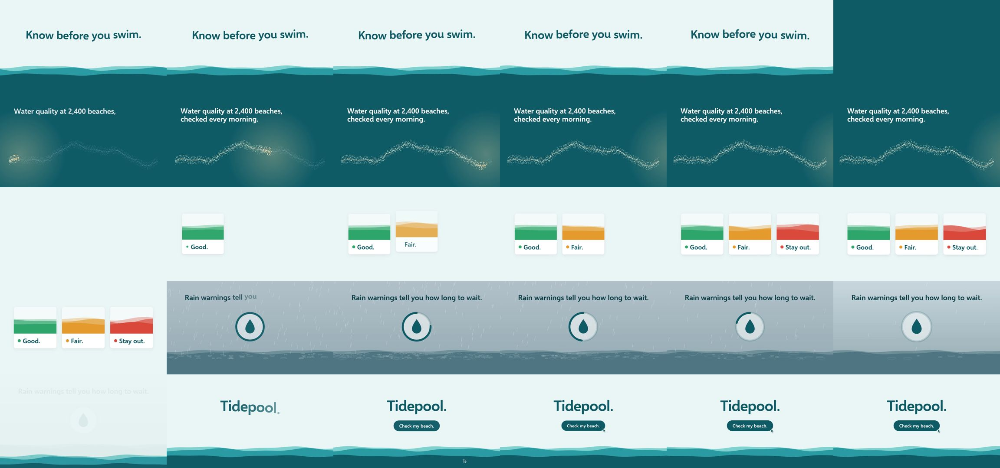

op7418/guizang-product-video-skill: test run, 2026-10-11
The same brief for every skill: a 15-second promo for a made-up app, five fixed lines of on-screen copy, 1920 x 1080 at 30 frames per second. Claude Code (Claude Opus 5.5) made it with the skill in a throwaway sandbox with no API keys for video, image or voice models. 8.6 minutes; sound: yes. All results · The brief · How it is checked
The four checks
| Renders to a playable file | pass | H.264 |
|---|---|---|
| Length, size and frame rate as asked | pass | 15.0 s, 1920x1080, 30.0 fps |
| All five lines readable | pass | 5 of 5 |
| The picture moves | pass | 7% of sampled frame pairs held still |
Frames sampled twice a second

How it was made (the session's closing message)
I made the 15-second Tidepool promo with the installed `guizang-product-video-skill`, using its starter project, direction file, original code-made music, built-in sound effects, audio mixer and delivery check. The file is H.264, 1920×1080, 30 fps, exactly 15.0 seconds, with AAC audio. The skill's delivery check passes with no errors. **What's on screen.** The five lines appear exactly as written and in order. Nothing else is added: no other text, logos or voice-over. The look is a light morning-sea palette: 1. **0–2.8s** "Know before you swim." floats above a moving waterline, then the tide rises and fills the frame. 2. **2.8–6.2s** "Water quality at 2,400 beaches, checked every morning." over a coastline of 2,400 dots that a morning light sweeps across and lights up. One dot then grows to open the next shot. 3. **6.2–9.4s** "Good. Fair. Stay out." as three cards that drop in one at a time, with green, amber and red water. 4. **9.4–12.2s** "Rain warnings tell you how long to wait." Rain falls on water while a countdown ring empties, then the rain stops. 5. **12.2–15s** "Tidepool." and a "Check my beach." button that an on-screen cursor clicks. **Choices made without asking you**, as instructed: - **Style:** there's no Tidepool code repo, so I used the skill's default style. The cards and button are built from its components rather than real app screens, and the film doesn't show any particular platform (phone, web). - **Language:** English only. The skill normally adds a Chinese line under each headline, but that would add text not in the brief. The reason is recorded in `plan.json`. - **Sound:** the music is generated by a script, and the sound effects are the skill's own built-in ones. There's no sound library on this machine and the brief ruled out downloads. **What I checked:** - **Looked at:** frame sheets at 2 frames a second, frame-by-frame strips of each transition, and full-size frames. Review fixed two problems: a blank first frame (it now opens on the finished title) and an empty half-second after the dot transition. - **Measured, not listened to:** each sound effect is present in the final MP4 at its moment, louder than the music there. I couldn't listen, so overall loudness, balance and how the music feels are unchecked. - **Reading time:** the checker warns that lines 2 and 4 might be on screen too briefly. Lines 2 and 4 are each fully readable for about 2–3 seconds, but I haven't timed a real read. The project is in `~/work/project`. Review images and logs are in `~/work/project/evidence`. DELIVERABLE: ~/work/output/video.mp4